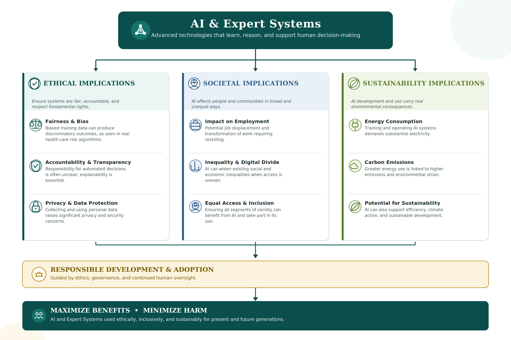

Abstract
Artificial Intelligence (AI) and Expert Systems are rapidly changing various industries including health care, education, finance, manufacturing, and cybersecurity through increased efficiency and better decision making. This report explores the social implications of these new technologies, in particular highlighting their ethical, societal, and sustainability implications. This research is based on a thorough literature review and critical analysis of reliable sources which include WHO reports, UNESCO reports, NIST reports, Stanford Institute for HCAI, and some recent research articles. The research suggests that although these technologies have many positive aspects, they also pose certain challenges with respect to privacy issues, bias, accountability, job loss, inequalities, and environmental sustainability. There are ethical considerations because of issues such as skewed data, lack of accountability in AI-based decision making, and the violation of human rights. Socially, there is the chance that the emergence of AI could lead to changes in the labor market and increase inequality in case the use of technology is not distributed evenly. Considering sustainability, there is the need for large amounts of computational power and energy, but at the same time AI has the potential to lower the emission of carbon and support sustainable development.
Introduction
Every time an algorithm grants a loan, rejects a job application, or prioritizes patients based on the urgency of their conditions, it makes a decision traditionally made by people without being able to explain the reasoning process behind the decision. The use of Artificial Intelligence (AI) and Expert Systems has become widespread in our society, affecting industries ranging from health care and education to banking and transportation, manufacturing, and cybersecurity. Yet as these systems take on greater autonomy, they raise concerns that go beyond any single industry, touching on the ethical, societal, and sustainability costs that must be weighed against their benefits. AI allows the computer to do work that involves intelligence, while Expert Systems simulate the expertise of humans in a particular field. With the increasing usage of these systems and their growing autonomy, their impact on society is also becoming more significant.
Alongside these industry-wide gains, the adoption of AI and Expert Systems raises significant social implications. Privacy issues, discrimination, accountability, employment concerns, cybersecurity issues, responsible usage of personal information, and sustainability issues because of their high computation requirements are some of the issues that can occur from the adoption of these technologies. In this paper, the social implications of AI and Expert Systems are investigated by assessing the ethical, societal, and sustainability impact of these systems and showing how these technologies can be responsibly developed and adopted, while making sure they provide maximum benefits and minimal harm. Three research questions will be answered in this study:
- What are the main social implications of AI and Expert Systems?
- What ethical problems may arise because of their extensive adoption?
- How can these technologies be responsibly developed and adopted?
Literature Review
Current research on this subject shows the immense possibilities that can be achieved by means of Artificial Intelligence (AI) in the future, especially in the healthcare sector. As the World Health Organization (2021) highlights, there is a great potential of AI applications in public health and medicine, and some achievements have been made in drug discovery, genomics, radiology, pathology, and prevention. These developments demonstrate the potential of AI for benefiting many spheres of life in society. At the same time, along with increasing applications of AI technologies, researchers and international bodies have expressed their concerns regarding the wider consequences of AI on the individual and societal level.
Issues concerning the ethical implications of Artificial Intelligence have gained increasing significance with the rise in the application of such technologies. According to the World Health Organization (2021), some of the ethical questions associated with the use of AI are the digital divide, poor data quality, biased clinical data, and improper data collection techniques, which may be common among disadvantaged people. Other ethics issues include liability and justice when an individual is injured due to AI technology. UNESCO (2021) focuses on human dignity, well-being, and non-harm, meaning ethical AI should not be narrowed down to fixing bad datasets but should also involve basic human rights regardless of data integrity. Tabassi (2023) further argues that AI technologies without proper controls will intensify negative or unfair consequences to individuals and communities, while appropriate controls can help reduce such consequences.
The increasing adoption of artificial intelligence is also bringing changes within society, particularly in employment and inequality. According to the Stanford Institute for Human-Centered Artificial Intelligence (2024), 57% of respondents believe artificial intelligence will impact their jobs within the next five years, and 36% fear their jobs might be replaced within the next five years. UNESCO (2021) highlights that AI technology can add to growing inequalities both nationally and internationally. Despite AI's opportunities and advantages, its implementation is therefore likely to influence employment and social inequalities, making equal access to the technology and its benefits essential.
The sustainability impact of AI is another relevant issue. Wang et al. (2024) connect rapid growth in AI capabilities with increased energy use, especially during model training. According to Probst (as cited in Wang et al., 2024), training a model like ChatGPT consumes 1.287 gigawatt-hours of electricity, roughly equivalent to the annual electricity consumption of 120 American households. Yet Wang et al. (2024) also report that for every 1% growth in a country's AI development level, carbon dioxide emissions decrease by 0.0013%. AI's sustainability effect is therefore both negative and positive, requiring responsible development and use.
Overall, the literature shows that AI's influence on society has both positive and negative aspects. Ethical, social, and sustainability factors must be considered together so that AI technology can provide maximum benefit while minimizing possible ethical, societal, and environmental harms.
Methodology
This study employs a literature review (secondary research) approach in exploring the societal impact of Artificial Intelligence (AI) and Expert Systems. This research focuses on the synthesis and analysis of existing information that has been provided in different studies and reports from various international organizations.
In conducting an analysis of this study, credible sources have been used from the World Health Organization (WHO), UNESCO, the National Institute of Standards and Technology (NIST), Stanford Institute of Human-Centered Artificial Intelligence (HAI), and recent peer-reviewed studies by Wang et al. (2024).
This search process entailed identifying articles on the issues of ethics, society and the environment associated with AI and Expert Systems through the use of keywords such as Artificial Intelligence, Expert Systems, AI Ethics, Social Implications, Sustainability, Bias, Privacy, and AI Governance. Only credible, current and relevant literature pertaining to the research problem was considered for inclusion in the review. Only sources of information dealing with issues of ethics, society, and sustainability in relation to AI from credible organizations and academic journals were selected; the rest of the sources were not considered.
The evaluation of the results is conducted through three ethical perspectives: Utilitarianism, which looks at actions from the perspective of maximizing overall benefit to society; Kantian Ethics, which focuses on respect for human dignity and individual rights; and Social Contract Theory, which stresses the duty of the state and corporations to set rules to regulate responsible AI technology development and implementation.
Analysis
Ethical Implications
In terms of ethics, issues surrounding AI and Expert Systems have a connection with fairness, accountability, privacy, as well as the possible damage from those technologies. According to the World Health Organization (WHO, 2021), some problems are low-quality data, bias in the clinical data, and improper data collection methods. In other words, the quality and the nature of the data can influence the outcomes' fairness in regard to artificial intelligence. With the usage of biased data, AI can not only maintain but also worsen the existing disparities in certain populations.
One example where this was observed relates to the algorithmic identification of patients with complex needs in order to deliver additional health care services. The algorithm considered the past health care expenses of individuals as a measure of the severity of their condition; however, due to the lesser amounts that were spent on treating Black individuals compared to white individuals with similar health conditions in the past, the algorithm underreported the need for more services for the Black population, making them seem ineligible for receiving additional services even when they were in a worse state than white individuals (Jain et al., 2023). In addition, the problem with accountability becomes severe in cases when a person is affected by AI and the responsibility for the situation is not clear enough: it is not known if it is the developer, organization, or user of AI who is to blame for the problem. As pointed out by Tabassi (2023), proper control measures can help decrease the inequity.
Societal Implications
The societal implications of AI can be seen particularly in employment and inequality. According to the Stanford Institute for Human-Centered Artificial Intelligence (2024), there is an expectation on the part of many people that AI will impact their employment, although there is also an apprehension that their occupation might be substituted in the future by artificial intelligence. It implies that apart from affecting the availability of certain occupations, AI may also change the skills necessary for a worker to possess. In addition, UNESCO (2021) notes that artificial intelligence can exacerbate already existing inequalities both within countries and between them. In case access to artificial intelligence is not equal, then those who have less technological potential will be at a considerable disadvantage.
Considering this both nationally and internationally, the Stanford finding on employment can be read as an early warning of something larger happening. AI may also have specific advantages and disadvantages that apply differently to different segments of society, which makes equal access to such technologies, and the ability to benefit from them, all the more important.
Sustainability Implications
The sustainability implications of AI present both advantages and disadvantages. According to Wang et al. (2024), there is an important issue of energy demands involved in the training of AI systems, but greater levels of AI development were associated with lower carbon emissions. Training a model like ChatGPT, for instance, consumes 1.287 gigawatt-hours of electricity, roughly equivalent to the annual electricity consumption of 120 American households. Yet Wang et al. (2024) also find that for every 1% growth in a country's AI development level, carbon emissions decrease by 0.0013%. In other words, AI helps promote sustainability while also consuming a lot of energy in the process, meaning the environmental impact of AI needs to be assessed at every stage of development and use.
Ethical Theories
The impact of AI and Expert Systems can also be examined using different ethical theories. In accordance with Utilitarian philosophy, the use of AI would be deemed ethical provided the process results in good for society and decreases the chances of harm; the gains made in areas such as medicine and efficiency have to be weighed against possible dangers of discrimination, job loss, and pollution. In accordance with Kantian philosophy, human beings ought to be respected as humans rather than as sources of data. Finally, according to Social Contract Theory, governments and organizations are supposed to create proper regulations concerning the use of AI, helping society reap the benefits of technological progress while minimizing potential harm.
Figure 1: AI and Expert Systems implications diagram Select to expand or collapse the diagram

In conclusion, it could be said that the analysis above demonstrates that the use of AI and Expert Systems can be extremely beneficial for society as long as it is done in an appropriate way. Ethical considerations, changes taking place in society, and sustainability issues need to be taken into consideration together, not individually.
Recommendations
Given the ethical implications of AI and Expert Systems described above, it is necessary to consider some controls needed to protect individuals. First, there should be regular audits of AI to check if AI creates any biases or inequity, especially if AI is applied to those cases where such results can negatively impact the lives of people. Human involvement in important decision making should also be ensured so that the whole responsibility cannot rely only on the automated system (Tabassi, 2023; World Health Organization, 2021).
In addition, the societal implications of AI should be taken into account in the process of its implementation. Governments and organizations need to make sure that the different segments of society receive equal opportunities of getting the technology and its benefits, since it is likely that access to new technologies can deepen existing inequalities (UNESCO, 2021). Moreover, the growing impact of AI on employment requires further preparation of people for the changing environment.
Finally, the sustainability of AI must also be taken into account during both the development and use of AI. While the goal must be reducing unnecessary energy consumption associated with AI technology, further exploration of the potential role of such technologies for sustainability must also be undertaken (Wang et al., 2024). All in all, proper implementation of AI involves weighing its ethical, social, and environmental implications.
Conclusion
This paper examined the social implications of Artificial Intelligence (AI) and Expert Systems by investigating their ethical, societal, and sustainability implications. It can be concluded that despite the fact that AI provides many advantages to humanity in health care, education, economics, and industry, it poses serious problems to humankind such as bias, privacy, accountability, changes in employment, social inequality, and high energy usage.
It can be stated that the aforementioned results point to the necessity of the development and implementation of responsible AI. Fairness, transparency, human control, respect for human rights and individualism are vital factors that need to be considered during the creation of new AI tools in order to use AI safely and beneficially for society and minimize any possible harm. At the same time, equal access and sustainability should be provided.
Overall, AI and Expert Systems may positively change society greatly if governed properly.
References
Full entries with abstracts are on the Reference page. APA 7 format below.
Jain, A., Brooks, J. R., Alford, C. C., Chang, C. S., Mueller, N. M., Umscheid, C. A., & Bierman, A. S. (2023). Awareness of racial and ethnic bias and potential solutions to address bias with use of health care algorithms. JAMA Health Forum, 4(6), e231197. View source
Stanford Institute for Human-Centered Artificial Intelligence. (2024). AI Index report 2024. Stanford University. View source
Tabassi, E. (2023). Artificial intelligence risk management framework (AI RMF 1.0) (NIST AI 100-1). National Institute of Standards and Technology. View source
UNESCO. (2021). Recommendation on the ethics of artificial intelligence. UNESCO. View source
Wang, Q., Li, Y., & Li, R. (2024). Ecological footprints, carbon emissions, and energy transitions: The impact of artificial intelligence (AI). Humanities and Social Sciences Communications, 11, 1043. View source
World Health Organization. (2021). Ethics and governance of artificial intelligence for health: WHO guidance. World Health Organization. View source
Appendix
Supporting excerpts from the source material, organized by theme.
An increasing number of practitioners and scholars point out that the explosive growth in AI capabilities is accompanied by an exponential increase in the energy consumption required for AI training. Training a single model like ChatGPT consumes 1.287 gigawatt-hours of electricity, roughly equivalent to the annual electricity consumption of 120 American households.
For every 1% increase in a country's artificial intelligence development level, the country's carbon emissions decrease by 0.0013%. At the same time, that same 1% development increase boosts the country's energy transition by 0.0025%, the largest coefficient among the effects studied, indicating that AI's effect on sustainability runs in more than one direction.
Source: Wang et al. (2024).
"AI technologies can deepen existing divides and inequalities in the world, within and between countries, and... justice, trust and fairness must be upheld so that no country and no one should be left behind, either by having fair access to AI technologies and enjoying their benefits or in the protection against their negative implications... It considers ethics as a dynamic basis for the normative evaluation and guidance of AI technologies, referring to human dignity, well-being and the prevention of harm as a compass and as rooted in the ethics of science and technology."
Source: UNESCO (2021).
"Without proper controls, AI systems can amplify, perpetuate, or exacerbate inequitable or undesirable outcomes for individuals and communities. With proper controls, AI systems can mitigate and manage inequitable outcomes. AI risk management is a key component of responsible development and use of AI systems... Core concepts in responsible AI emphasize human centricity, social responsibility, and sustainability."
Source: Tabassi (2023), Artificial Intelligence Risk Management Framework (AI RMF 1.0), NIST.
"WHO recognizes that AI holds great promise for the practice of public health and medicine... Use of AI technologies for health holds great promise and has already contributed to important advances in fields such as drug discovery, genomics, radiology, pathology and prevention... Several ethical challenges are emerging with the use of AI for health, many of which are especially relevant to LMIC [low- and middle-income countries]... including an enduring digital divide, lack of good-quality data, collection of data that incorporate clinical biases... and lack of treatment options after diagnosis."
"In many LMIC, injured parties may not have access to justice, or it may be too expensive or too protracted, so that it is not just difficult to obtain compensation for harm caused by AI technologies but it is also unlikely to serve as a deterrent... Marginalized populations have even less protection and are often excluded from redress within the legal system."
Source: World Health Organization (2021), Ethics and Governance of Artificial Intelligence for Health: WHO Guidance.
"An algorithm used to identify patients with complex medical needs who might benefit from additional services underestimated need among Black patients because health care use was misconstrued as a proxy for illness severity. As a result, some Black people appeared ineligible for additional services despite having worse health."
Source: Jain et al. (2023).